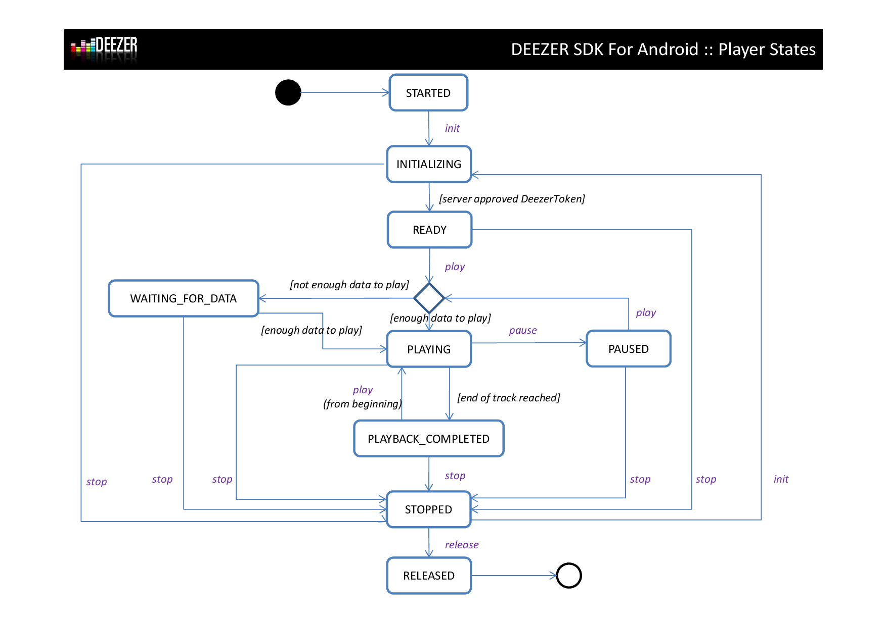

com.deezer.sdk.player
public interface Player
The player is a state machine described by the following schema : 
The player progress and state, as well as its buffer state and progress can be monitored through 6 interfaces :| Modifier and Type | Method and Description |
|---|---|
void |
addOnBufferErrorListener(OnBufferErrorListener onBufferErrorListener)
Adds a OnBufferErrorListener to the Buffer.
|
void |
addOnBufferProgressListener(OnBufferProgressListener onBufferProgressListener)
Adds a OnBufferProgressListener to the Buffer.
|
void |
addOnBufferStateChangeListener(OnBufferStateChangeListener onBufferStateChangeListener)
Adds a OnBufferStateChangeListener to the Buffer.
|
void |
addOnPlayerErrorListener(OnPlayerErrorListener onPlayerErrorListener)
Adds a OnPlayerErrorListener to the player.
|
void |
addOnPlayerProgressListener(OnPlayerProgressListener onPlayerProgressListener)
Adds a OnPlayerProgressListener to the player.
|
void |
addOnPlayerStateChangeListener(OnPlayerStateChangeListener onPlayerStateChangeListener)
Adds a OnPlayerStateChangeListener to the player.
|
PlayerState |
getPlayerState() |
long |
getPosition() |
long |
getTrackDuration() |
void |
init(long sngId,
java.lang.String streamTokenOrPreviewUrl)
Initializes the player.
|
boolean |
isAllowedToSeek() |
void |
pause()
Pauses the player.
|
void |
play()
Plays the initialized track.
|
void |
release()
Release all player resources.
|
void |
removeOnBufferErrorListener(OnBufferErrorListener onBufferErrorListener)
Removes a OnBufferErrorListener to the Buffer.
|
void |
removeOnBufferProgressListener(OnBufferProgressListener onBufferProgressListener)
Removes a OnBufferProgressListener to the Buffer.
|
void |
removeOnBufferStateChangeListener(OnBufferStateChangeListener onBufferStateChangeListener)
Removes a OnBufferStateChangeListener to the Buffer.
|
void |
removeOnPlayerErrorListener(OnPlayerErrorListener onPlayerErrorListener)
Removes a OnPlayerErrorListener to the player.
|
void |
removeOnPlayerProgressListener(OnPlayerProgressListener onPlayerProgressListener)
Removes a OnPlayerProgressListener to the player.
|
void |
removeOnPlayerStateChangeListener(OnPlayerStateChangeListener onPlayerStateChangeListener)
Removes a OnPlayerStateChangeListener to the player.
|
void |
seek(long position)
Seeks inside the currently playing track.
|
void |
setPlayerProgressInterval(long interval)
Sets the interval at which OnPlayerProgressListener are notified.
|
boolean |
setStereoVolume(float left,
float right)
Sets the stereo volume of the player
|
void |
stop()
Stops the player.
|
PlayerState getPlayerState()
void setPlayerProgressInterval(long interval)
interval - the new interval (in ms).void addOnPlayerProgressListener(OnPlayerProgressListener onPlayerProgressListener)
onPlayerProgressListener - the listener to be added.setPlayerProgressInterval(long)void removeOnPlayerProgressListener(OnPlayerProgressListener onPlayerProgressListener)
onPlayerProgressListener - the listener to be removed.void addOnPlayerStateChangeListener(OnPlayerStateChangeListener onPlayerStateChangeListener)
onPlayerStateChangeListener - the listener to be added.void removeOnPlayerStateChangeListener(OnPlayerStateChangeListener onPlayerStateChangeListener)
onPlayerStateChangeListener - the listener to be removed.void addOnPlayerErrorListener(OnPlayerErrorListener onPlayerErrorListener)
onPlayerErrorListener - the listener to be added.void removeOnPlayerErrorListener(OnPlayerErrorListener onPlayerErrorListener)
onPlayerErrorListener - the listener to be removed.void addOnBufferProgressListener(OnBufferProgressListener onBufferProgressListener)
onBufferProgressListener - the listener to be added.void removeOnBufferProgressListener(OnBufferProgressListener onBufferProgressListener)
onBufferProgressListener - the listener to be removed.void addOnBufferStateChangeListener(OnBufferStateChangeListener onBufferStateChangeListener)
onBufferStateChangeListener - the listener to be added.void removeOnBufferStateChangeListener(OnBufferStateChangeListener onBufferStateChangeListener)
onBufferStateChangeListener - the listener to be removed.void addOnBufferErrorListener(OnBufferErrorListener onBufferErrorListener)
onBufferErrorListener - the listener to be added.void removeOnBufferErrorListener(OnBufferErrorListener onBufferErrorListener)
onBufferErrorListener - the listener to be removed.void init(long sngId,
java.lang.String streamTokenOrPreviewUrl)
sngId - the Id of the track to be played.streamTokenOrPreviewUrl - a streamToken identifying a stream / track, provided by API methods. For free
accounts
developpers should pass the preview url. See sample app for further details.com.deezer.sdk.network.connect.DeezerConnectInterface#authorize(android.app.Activity,
String[], com.deezer.sdk.DialogListener)void play()
void seek(long position)
position - the desired position inside the track (in ms).void pause()
void stop()
long getTrackDuration()
long getPosition()
void release()
boolean isAllowedToSeek()
boolean setStereoVolume(float left,
float right)
left - the volume for the left channel (between 0.0 and 1.0)right - the volume for the right channel (between 0.0 and 1.0)